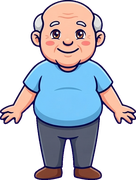
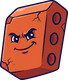

Prepara l'escenari
Obre Scratch i carrega el projecte base
Objectiu: tenir Scratch obert en català amb el professor, un paper i un maó a punt.
Què has de fer
- Obre scratch.mit.edu/projects/editor. No cal crear cap compte.
- Canvia l'idioma: a dalt a l'esquerra, clica Settings (la roda dentada) → Language i baixa per la llista fins a Català. Si ja surt en castellà o en català, el menú es diu Configuración o Configuració → Idioma.
- Juguem una mica amb les instruccions de Scratch. Amb el gat que surt en obrir Scratch, clica aquests blocs sense enganxar-los: Moviment mou 10 passos, Moviment gira 15 graus i So toca el so Miau. Cada cop que cliques un bloc, el gat el fa a l'instant.
- Menú Fitxer → Carrega des del teu ordinador i tria el fitxer projecte-base.sb3. Si surt un avís, accepta.
- Mira l'esquema: has de reconèixer les quatre zones de la pantalla.
- Treballeu en parella: A llegeix les instruccions en veu alta i B posa els blocs a Scratch. Quan canvieu de personatge, canvieu de paper.
Demana el fitxer al professor o agafa'l del Classroom.
- 1 · Blocs: les peces, ordenades per colors.
- 2 · Zona de codi: aquí hi arrossegues i enganxes els blocs.
- 3 · Escenari: on es veu el joc. La bandera verda l'engega.
- 4 · Personatges: Professor, Paper i Maó. Clica'n un per editar el seu codi.
Comprova
Veus el carrer amb tres edificis, el professor a baix, un paper i un maó a dalt?
El professor es mou
Esdeveniments, bucles i condicions
Objectiu: moure el professor a l'esquerra i a la dreta amb les fletxes del teclat.

Selecciona: ProfessorQuè has de fer
- Esdeveniments Arrossega quan la bandera es cliqui a la zona de codi. Tot programa comença amb un esdeveniment.
- Aspecte Enganxa a sota canvia el fons a i, al desplegable, tria carrer. Així cada partida comença al carrer.
- Moviment Enganxa a sota ves a x: y:. Escriu 0 a la x i -110 a la y. Així sempre comença al mig.
- Control Afegeix per sempre. El que hi posis a dins es repeteix sense parar.
- Control Dins del bucle, posa un si … llavors.
- Sensors Arrossega tecla … premuda? al forat del si. Al desplegable, tria fletxa dreta.
- Moviment Dins del si, posa suma 10 a x i canvia el 10 per 8.
- Clic dret sobre el si → Duplica. Enganxa'l a sota i canvia-hi fletxa esquerra i -8.
Si no et funciona
- Comprova que has seleccionat el Professor, no el Paper.
- Els dos si han d'estar dins del per sempre.
- Per anar a l'esquerra, el número ha de portar el signe menys: -8.
El teu programa del Professor
Resultat esperat: el professor es mou a banda i banda.
Comprova
Clica la bandera verda i prem les fletxes. Es mou cap als dos costats?
Cauen papers de les finestres
Moviment continu i posicions a l'atzar
Objectiu: que el paper caigui de la part superior de la pantalla, arribi fins a baix i torni a començar.
Què has de fer
- Esdeveniments quan la bandera es cliqui.
- Moviment ves a x: y:. Escriu 130 a la y. A la x, arrossega-hi Operadors (els blocs verds) nombre a l'atzar entre 1 i 10 i canvia l'1 per -200 i el 10 per 200.
- Control per sempre.
- Moviment Dins: suma 10 a y i canvia el 10 per -3. El paper baixa 3 passos cada vegada.
- Control Sota, un si … llavors. Com a condició: Operadors … < …, amb Moviment posició y al primer forat i -150 al segon.
- Dins del si, posa una còpia del ves a x: y: 130 (clic dret → Duplica). Quan arriba a baix, torna a sortir d'una finestra.
El teu programa del Paper
Resultat esperat: el paper cau i, quan arriba a baix, torna a sortir de dalt.
Comprova
Clica la bandera verda. El paper cau una vegada i una altra des de llocs diferents?
Recull papers i suma punts
Variables, condicions i so
Objectiu: cada paper que agafi el professor suma un punt i fa un so.
Què has de fer
- Variables Clica Crea una variable. Posa-hi el nom Punts i marca Per a tots els personatges. Veuràs el marcador a l'escenari.
- Variables Enganxa assigna a … el valor 0 just sota quan la bandera es cliqui i, al desplegable, tria Punts. Així cada partida comença a zero.
- Control Dins del per sempre, sota suma -3 a y, posa un altre si … llavors. Al seu forat, Sensors tocant … ? i, al desplegable, tria Professor.
- Dins d'aquest si: Variables augmenta … en 1 (tria Punts), So inicia el so (tria recull) i una còpia del ves a x: y: 130 (clic dret → Duplica).
Si no et funciona
- Al desplegable de tocant ha de posar Professor, no punter del ratolí.
- No sents el so? Mira que tens el volum de l'ordinador pujat.
- Els punts no es posen a zero? Falta el bloc assigna a Punts el valor 0.
El teu programa del Paper NOU = el que afegeixes ara
Resultat esperat: en agafar el paper, el marcador puja un punt.
Comprova
Agafa un paper amb el professor. Sona el so i el marcador puja?
Perill: cau un maó
Condicions, canvi de pantalla i final de partida
Objectiu: si un maó toca el professor, el joc s'acaba i surt la pantalla final.

Selecciona: MaóQuè has de fer
- Esdeveniments quan la bandera es cliqui, i sota Moviment ves a x: y:: 130 a la y i, a la x, Operadors nombre a l'atzar entre 1 i 10 amb -200 i 200, igual que al Paper. Així el maó torna a dalt de seguida.
- Afegeix Control espera 1 segons i canvia l'1 per 3. Així el primer maó triga a caure.
- Afegeix Control per sempre i, a dins, Moviment suma 10 a y amb -4 en lloc del 10.
- Dins, un Control si … llavors amb Sensors tocant Professor?. A dins hi van tres blocs, en aquest ordre: Aspecte canvia el fons a fi, So toca el so perdre fins que acabi (la musiqueta; el cop i l'«ai!» del professor ja vénen fets) i Control atura tot.
- Dins del per sempre, sota aquest si, posa un altre Control si … llavors. Al seu forat, Operadors … < …: al primer forat, Moviment posició y, i al segon, -150. A dins, una còpia del ves a x: y: 130 (clic dret → Duplica). Així, quan el maó arriba a baix, torna a dalt i cau de nou.
El programa del Maó
Resultat esperat: el maó toca el professor i surt la pantalla final.
Comprova
Deixa que et caigui un maó. Sona l'«ai» i surt «Fi del joc»? Clica la bandera verda: torna a començar al carrer?
Cada cop més difícil
Operacions amb variables (si en queda temps)
Objectiu: que el maó caigui més de pressa a mesura que sumes punts.
Què has de fer
- Operadors Arrossega el bloc de restar, … - … (el que té el signe menys al mig), al forat del suma -4 a y, on ara hi ha el -4.
- Al primer forat de la resta, escriu -4.
- Operadors Al segon forat, posa un bloc … / … (divisió).
- Variables Arrossega Punts al primer forat de la divisió i escriu 5 al segon.
Ara el maó baixa 4 + Punts ÷ 5 passos cada vegada. Com més punts, més ràpid.
| Punts | Passos que baixa |
|---|---|
| 0 | 4 |
| 10 | 6 |
| 25 | 9 |
| 50 | 14 |
El bloc de moviment del Maó, ara amb operacions
Comprova
Juga un parell de minuts. Notes que al principi és tranquil i després els maons cauen cada cop més de pressa?
Fes-lo teu
Reptes per als que acabin abans
Dibuixa el teu professor
Selecciona el Professor, obre Disfresses i canvia-li la cara o la camisa.
Canvia la música
Clica l'Escenari (a la dreta, al costat dels personatges), obre Sons i tria'n un de nou de la biblioteca. Al programa de l'Escenari, canvia musica pel teu.
Dos maons
Clic dret al Maó → Duplica. Canvia l'espera inicial perquè no caiguin alhora.
Paper daurat
Duplica el Paper, pinta'l de groc i fes que valgui 5 punts: augmenta Punts en 5.
Tres vides
Crea la variable Vides amb valor 3. Cada maó en resta una. Quan arribi a 0, s'acaba el joc.
Desa i comparteix
Menú Fitxer → Desa al teu ordinador. Després puja'l al Google Drive i comparteix-lo amb el teu company de grup.
Què has après
Els mateixos conceptes que fa servir qualsevol videojoc o producte multimèdia interactiu
| Concepte | Què és | On l'has fet servir | Contingut oficial (CP IMSV0209, MF0945_3) |
|---|---|---|---|
| Esdeveniment | Alguna cosa passa i el programa respon. | La bandera verda i les fletxes del teclat. | UF1249: captació d'esdeveniments de l'usuari. UF1248: elements interactius |
| Bucle | Repetir accions sense parar. | «per sempre» fa caure papers i maons. | UF1249: control de flux (bucle). UF1247: rutes i guies de moviment |
| Condició | Decidir segons el que passa. | «si toca el professor». «si ha arribat a baix». | UF1249: condicions |
| Variable | Una caixa amb nom que guarda un valor. | Els punts. | UF1249: variables |
| Operació | Fer càlculs amb els valors. | El número a l'atzar i la velocitat que creix. | UF1249: operacions amb variables |
| Canvi de pantalla | Passar d'una escena a una altra. | De «carrer» a «fi». | UF1247: generació de transicions |
A l'aula, això es pot portar a qualsevol matèria. Els papers poden ser paraules, dates o respostes correctes, i els maons les incorrectes.